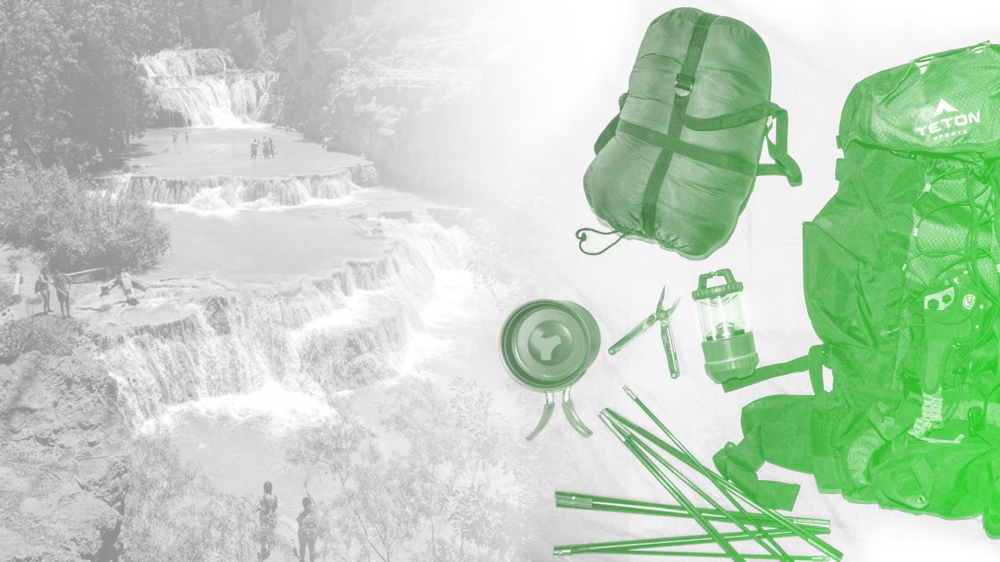
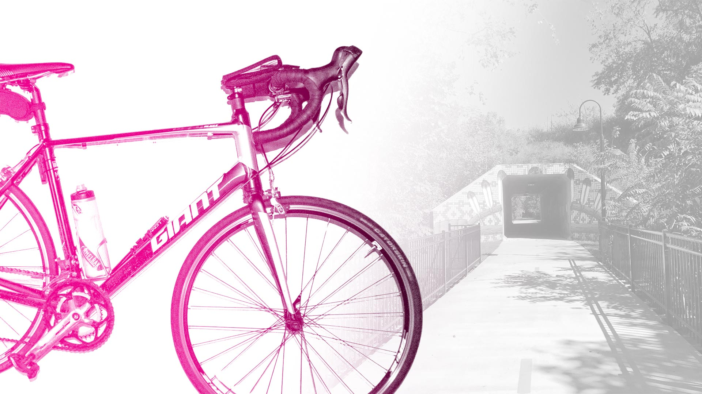
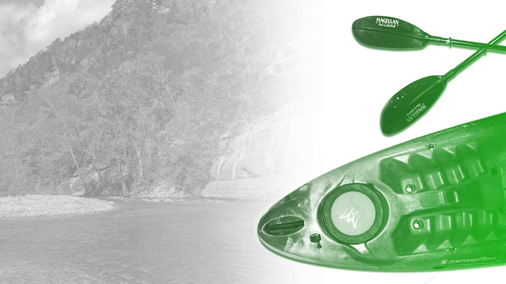
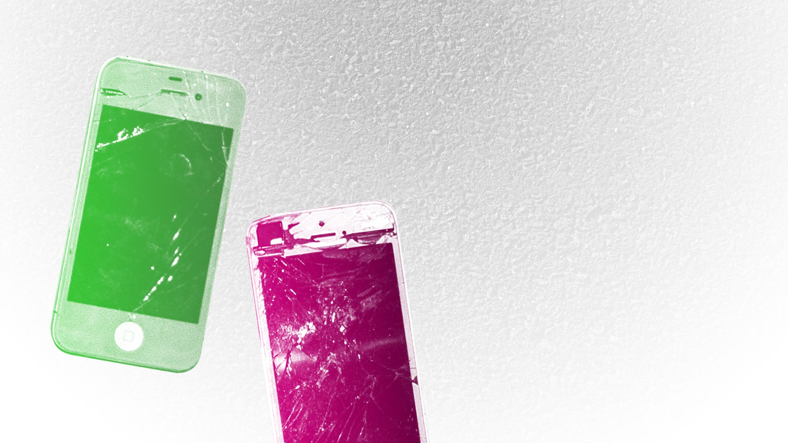

Maranda Moore
Designer of signage, “sissy” Adventurer, Avid Cyclist.
Quick Run down of my life before today– I was born in Arkansas, 1978. I grew up in small town in NW Arkansas but I eventually moved to Washington DC, where I worked as a nanny for a few years. Moved back home to Arkansas . When I was 30 I went back to college (for the first time) to pursue a degree in graphic design. Made a lot of friends along the way and found out a lot about what I am passionate about. If you like amazing adventures, then we have that in common. Scroll down the old-fashioned way, or click some of the icons below to jump to different sections.
Backpacking
Another passion of my is hiking. Not just hiking, but backpacking and camping. Any chance I get, I am out on the trail and hopefully hanging around a camp-fire. One of my favorite hiking trips was to Havasu Falls in Arizona. The hike through the desert was brutal, but worth it when I got to the amazing water falls, it was so rewarding! I also don’t use a tent; my recommendation is hammock-camping!
Cycling
One of the things I’m most passionate about is cycling. I may have a bum hip or as I like to call it: My “old lady hip”. But it doesn’t stop me from riding every chance I get. The furthest I’ve gone on one ride is 80 miles. I don’t compete or anything, mostly just ride for fun!
Kayaking
When I’m not on the trail or on my bike…or my couch…chances are I am on the water kayaking and enjoying a tasty beverage. There is nothing quite like a cold beer while floating down the Buffalo River.
Graceful
I never claimed that during my adventures, that I did any of it with grace. I drop my phone more than anyone I know. I’ve had to replace far too many screens…I’ve even learned how to replace the glass on my own phone
